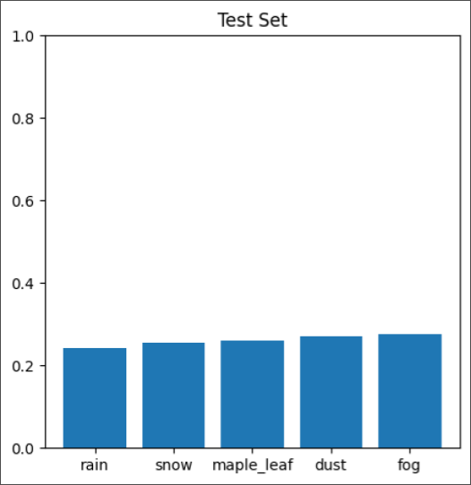
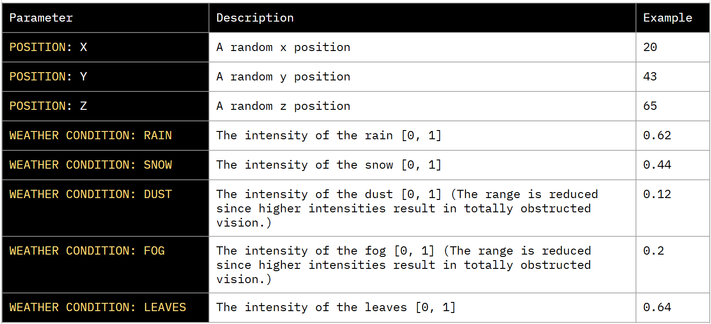

This dataset contains images from the AirSim simulator in the City environment. The images are taken at
random positions within the environment under various weather conditions
such as fog, rain, snow, dust, and maple leaves. The dataset is aimed at advancing object detection by
addressing diverse data distributions.
The idea of this dataset is that models trained on different distributions of data (which in this case is
different distributions of weather) can be
combined using an ensemble approach to effectively handle a separate distribution to enable better
generalization and performance on diverse datasets.
It contains images from the AirSim simulator in the CityEnviron environment. The images are taken at random positions within the environment under weather conditions such as fog, rain, snow, dust, and maple leaves.
The GitHub repository contains datasets with different distributions:The test set contains aerial imagery captured under mixed weather conditions using AirSim's drone vehicle. While the training sets each contain images with a particular prominent weather condition, the test set contains a variety of mixed weather conditions to emulate real-life scenarios and to test the generalization of models trained on the training sets.
The bar chart below display the average intensity of each weather parameter in the test set.
The dataset contains various images captured at random positions within
the City environment in Airsim. The following is a table containing the various parameters that were set
in the AirSim simulator to produce the datasets with different distributions.

Each dataset adheres to the COCO format and includes three key folders: annotations, train, and val.
Various models were trained on each distribution using Facebook's DeTR model. The models were trained with consistent hyperparameters, which include:
This setup ensures that each model is optimized for its specific distribution while following a standardized training process.
The model weights for models trained on each training set are available for general use.
@misc{shakarian2025error,
author = {Paulo Shakarian and Ransalu Senanayake and Gerardo I. Simari and Mario Leiva and Aditya Taparia and Noel Ngu},
title = {Error Correction through Multimodal Interpretable Meta Conditions: Simulated Aerial Imagery Dataset},
year = {2025},
url = {https://neurosymbolic.asu.edu/metacognition/}
}